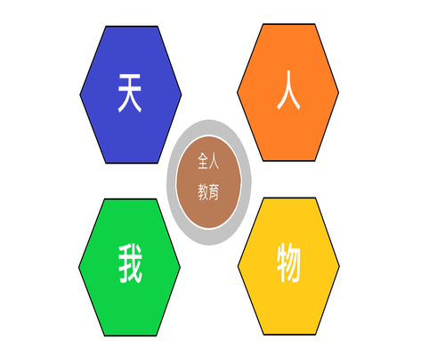

關於學校
About School
創校歷史
School history
中原大學，是一所位於桃園市中壢區的私立大學，創立於1955年，為美籍牧師賈佳美、基督徒張靜愚、鈕永建、郭克悌、陳維屏、瞿荊洲等人首倡設立，並得到中壢地方士紳吳鴻森、吳鴻麟、桃園縣長徐崇德等人之贊助支持之基督教大學，初名中壢農工學院，後於1955年10月奉教育部核准立案，正式設校定名為中原理工學院。其後於1980年8月1日改制為中原大學。
創校之初設有物理、化學、化學工程、土木工程4個學系。1972年由韓偉博士設立全國唯一的「醫學工程學系」（2006年更名為生物醫學工程學系），致力於推動臨床醫學與工程科技的結合，曾為部定該校的發展重點。1980年8月改名中原大學，現已成為擁有理、工、電機資訊、法、商、設計、人文與教育等7學院、27學系、25研究所之私立大學。
全人教育
School history

中原大學於民國78年頒布「教育宗旨與教育理念」，成為治校之精神憲法，不僅為全國首創，更為「全人教育」播下一粒美好的種子；如今，「全人教育」之核心價值已經轉化為中原師生的核心競爭力，更是中原大學與眾不同之處。
耗時兩年半、匯聚前人智慧而制定的中原大學教育宗旨與理念，當年在高等教育界引領風潮；雖歷經時空轉變，如今仍未消減其價值，並已具體落實於中原大學所推行的「全人教育」中，影響後代，甚至一點一滴改變世界。
「理念決定方向」，中原大學推動「全人教育」和教育宗旨與理念之內涵息息相關。教育宗旨「本基督愛世之忱，以信、以望、以愛」致力於高等教育之精神，使中原大學之發展有軌可依；七大教育理念則分別說明了教育哲學背後的價值觀與信念。
榮譽事蹟
Honor Deeds
- 2014年世界大學學術成就（URAP）世界排名第 879 名。台灣排名第 15 名，私立綜合大學第一名。
- 2015年2月中原大學商學院通過了世界三大商管學院評鑑單位之一的國際商管學院促進協會（AACSB）的認證，並躋身為全球前5%之優秀商學院。
- 2015 美國發明專利TOP100大學榮獲全台第4名，私立大學第一名。
- 2014-2018連續五年榮獲世界大學排名中心(CWUR)排名私立綜合大學第一名。
- 2020年金磚五國及新興經濟體國家大學排名排名第251-300名，台灣第 20 名。
校長語錄
Principal's Quotations
學生的光，老師看得見
老師的光，上帝看得見
校友的光，世界看得見